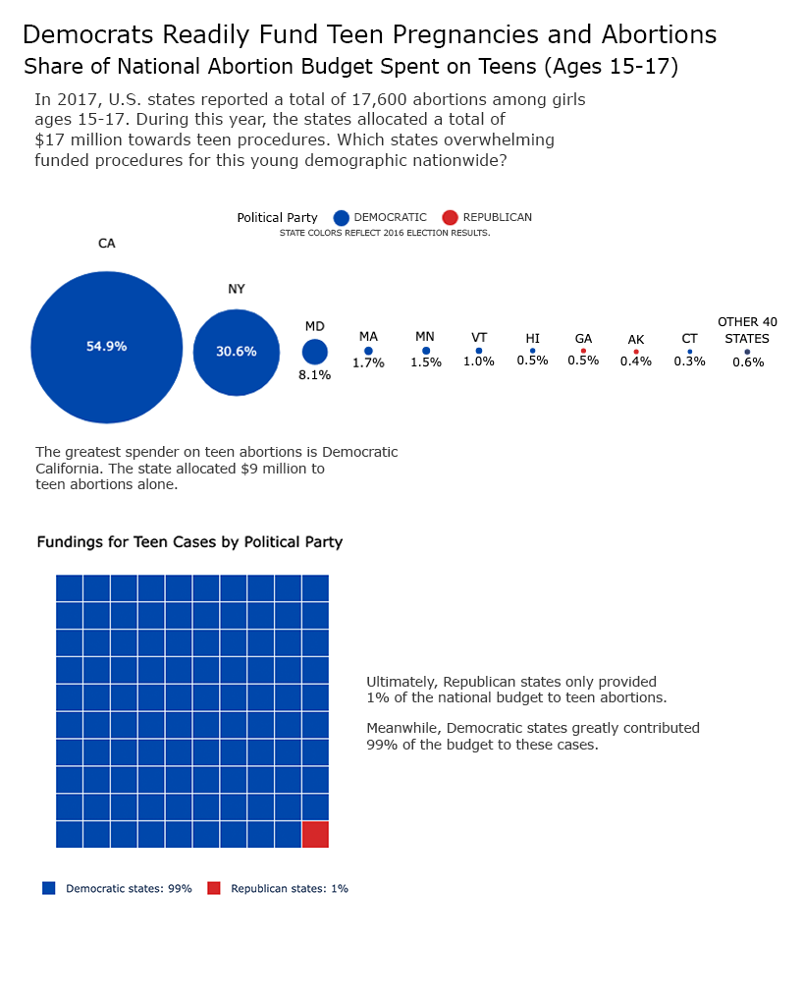
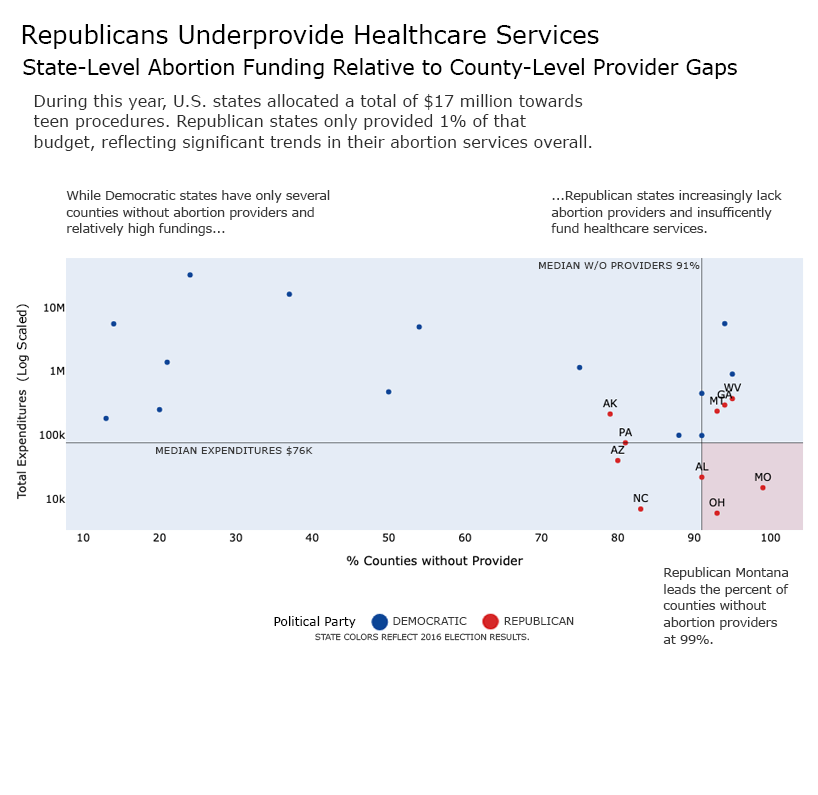

Proposition: Democratic states overwhelmingly fund abortions to a young demographic.
FOR the Proposition

Design Decisions and Rationale:
- SLANTED TEXT: All titles and annotations are written to nudge the viewer towards the proposition. While the title is extreme, the description and annotations to the plots use subtle yet suggestive language, e.g. "Which states... to this young demographic?" This scores -1.
- COLOR ENCODING: To be consistent with U.S. politics, Republican states are encoded red and Democratics are encoded blue. These specific encodings receive a 2. For the "other 40 states" featured in the bubble chart is subtly blue, so that the blue overwhelms the red encodings on the page. This itself scores -2.
- BUBBLE CHART REMOVED GRIDLINES AND SIZING: For the bubble chart, I opted to remove any gridlines so that I can inflate the areas of the bubbles. Since the percents themselves are accurate—and majority are below 1%—California's and New York's disproportionate sizing isn't as quickly recognized. This scores -1.5.
- BUBBLE CHART POSITIONING: In Photoshop, I adjusted the gap between the bubbles, pushing the largest bubbles together to appear larger. This scores a -2.
- WAFFLE CHART FOR EMPHASIS: This chart was included for narrative/rhetorical reasons. The numbers are completely accurate but are only included to reinforce the proposition. This scores a 0.
AGAINST the Proposition

Design Decisions and Rationale:
- SLANTED TEXT: Like FOR the proposition, the titles and annotations are slanted to nudge the viewer towards the (counter)propositon. This scores a -1.5.
- COLOR ENCODING: This visualization features the same color encodings as the previous visualization, however the blue data are less saturated as to shift focus onto the red data points. This scores a -0.5.
- REMOVAL OF GRIDLINES: Since I added the medians, the plot felt cluttered. I only removed the gridlines to improve the visibility and clarity of the plot. This scores a 0.5 (maybe 0).
- ADDITION OF MEDIANS: So that this visualization was not only a scatter plot, I opted to add the medians for both variables. This allows the viewer to effectively determine where red (and blue) data typically are. Scoring a 0.
- LABELING ONLY RED STATES: Since this proposition focuses on Republican states, I only labelled the red data points so that the viewer can locate specific states. This scores a -0.5.
- QUADRANT MARKING: The fourth quadrant, low-spenders and states highly lacking in providers, is colored red to draw attention. This serves to highlight that (coincidentally) only red states fall into this quadrant. This is a 0.
- LOG SCALED Y-AXIS: The data for California and New York plot outliers. Rather than removing them, I log scaled the y-axis for improved visibility of the data. I mention it in the plot labels. This scores a 2.
Final Reflection
In the beginning, I found it difficult to devise any overtly deceptive techniques, especially those that lied about the data I was representing. However, once I committed to my propositions, my design choices naturally slanted the story. Ultimately, this rhetorical and narrative approach demonstrates how easily bias can implicate data communication. While I could not think of intentionally deceptive designs, having this bias for my propositions effectively guided my design rationales and the information or insights I wanted to convey. This experience showed that selective framing can be just as persuasive as outright distortion.
Based on this process, I now view ethical analysis and visualization as the balance of transparency and storytelling. While visualizations communicate data information through clear and objective documentation, data visualization also requires intentional design choices to effectively convey these insights. During that process, implicit biases may compromise the transparency of the visualization. Consequently, knowing what design choices are more earnest than deceptive is significant to data communication. Ultimately, the boundary between honesty and deception would be the documentation of the process: hiding a log-scale axis, truncating data without note, or quietly removing outliers steps over the line, whereas explicitly labeling axes, showing full distributions, and footnoting transformations are honest. This boundary is one of many that ensures we persuade without misleading.